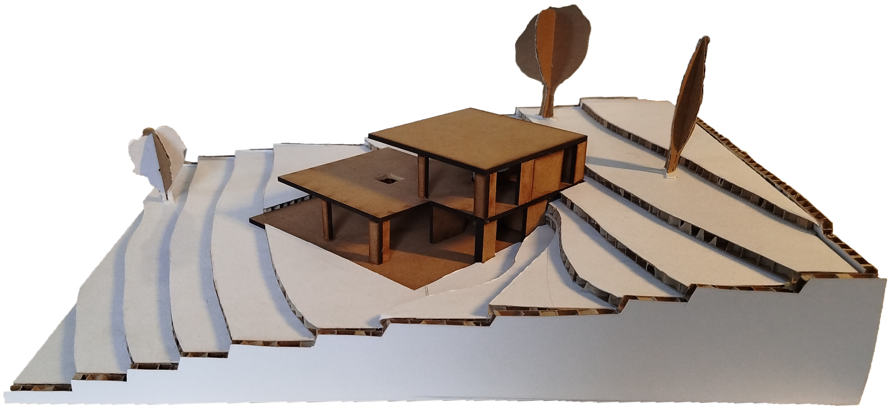
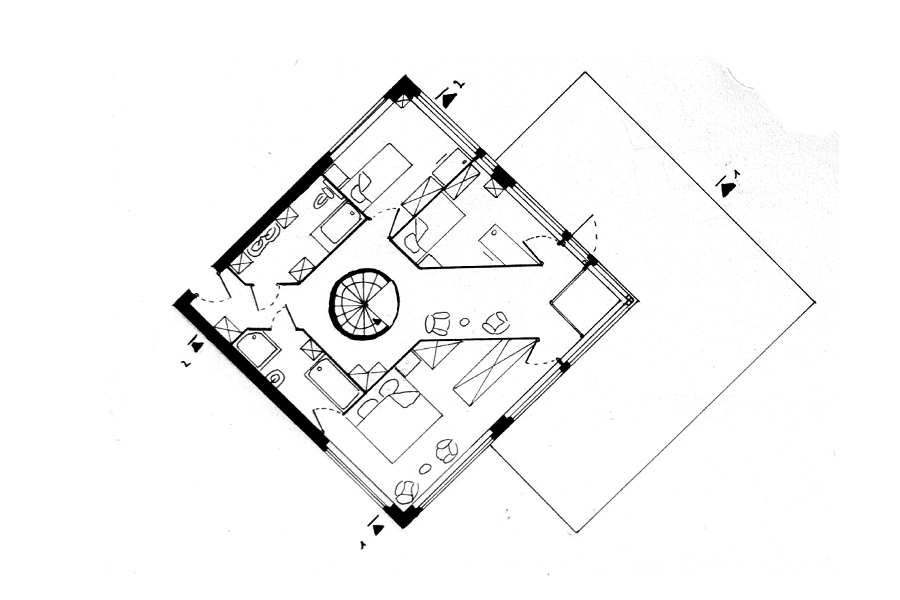
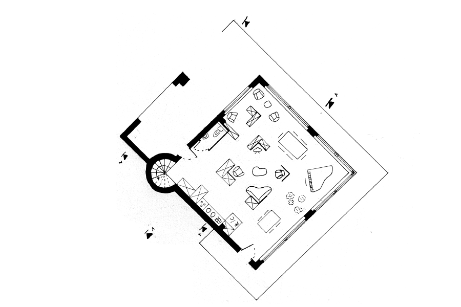
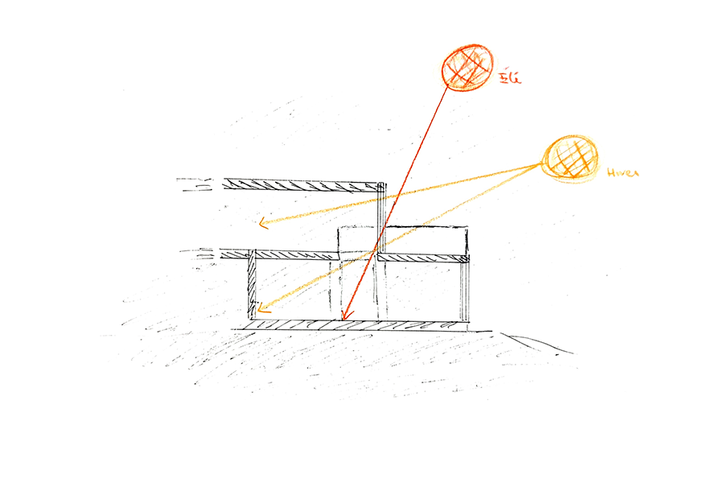
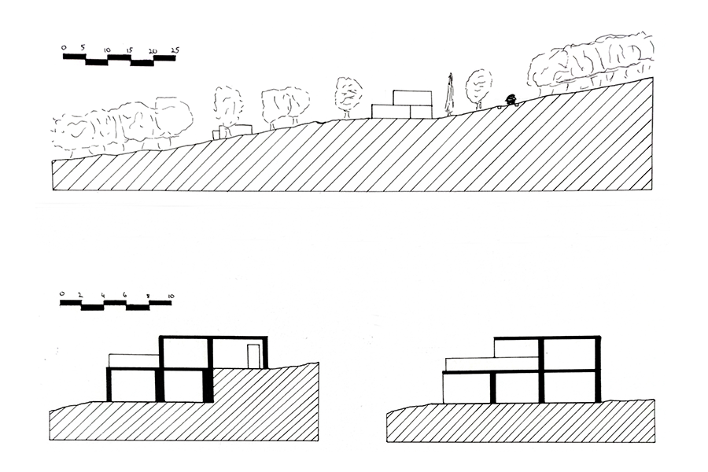
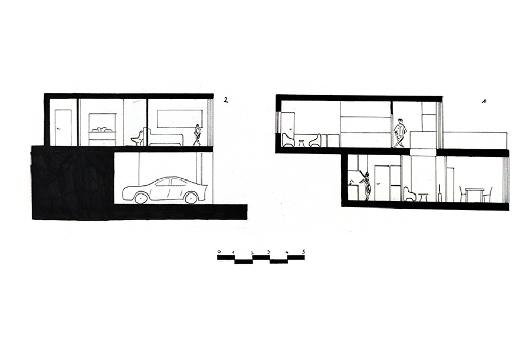

Lumière Légère, Obscurité Douce
Projet architectural – ENSAL

Contexte
Ce projet de première année visait à nous confronter aux fondamentaux de la conception architecturale à travers un exercice réaliste : implanter une maison individuelle sur un terrain en pente, avec une contrainte d’emprise au sol limitée. L’objectif était d’apprendre à composer avec un site, ses contraintes topographiques et climatiques.
J’ai choisi de développer le projet sur deux niveaux, afin de respecter les limites réglementaires tout en accompagnant le relief naturel du terrain. Cette implantation permet à la maison de s’intégrer harmonieusement dans le paysage, en créant une architecture discrète mais expressive.
L’espace de vie est orienté plein sud, avec une grande baie vitrée qui offre une vue dégagée sur la vallée. À l’arrière, la partie nord étant en partie enterrée, un puits de lumière a été intégré au centre de la maison. Il permet d’apporter de la lumière naturelle dans les espaces les plus profonds, tout en assurant une connexion visuelle et spatiale entre les deux étages grâce à une ouverture protégée par des garde-corps.
Démarche
Le puits de lumière constitue un élément central du projet, tant sur le plan spatial que fonctionnel. Situé au cœur de la maison, il perce verticalement les deux niveaux, créant une ouverture visuelle et physique entre les étages. Cette disposition permet à la lumière naturelle de traverser la maison en profondeur, notamment dans les espaces situés à l’arrière du premier étage, qui seraient autrement peu éclairés en raison de leur orientation nord et de leur intégration partielle dans le sol.
En hiver, le puits capte les rayons bas du soleil, contribuant à chauffer passivement les espaces intérieurs, tandis qu’en été, son positionnement et son traitement limitent l’exposition directe, évitant les surchauffes. Au-delà de sa fonction lumineuse, il agit comme un espace de respiration intérieure, apportant une qualité spatiale supplémentaire et renforçant la relation entre les différents niveaux de la maison.
Plans & croquis




